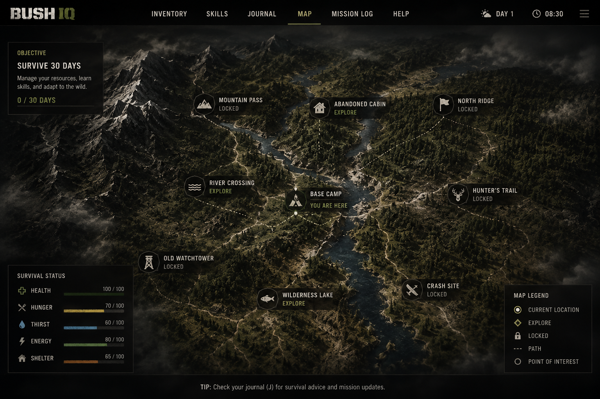

Module

The map image did not load. Keep bush-iq-map.png in the same folder as this file.
Bush IQ Prototype
Enter the Wild
This prototype turns the map into the core game loop. Click locations, complete survival modules, manage your resources, and unlock deeper areas of the wilderness.